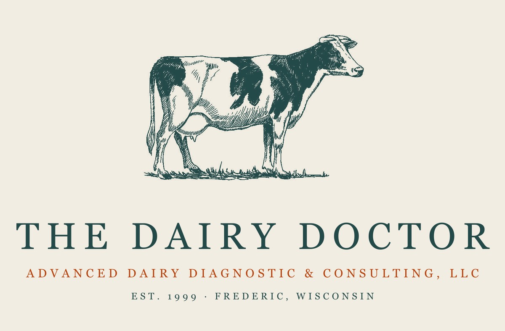
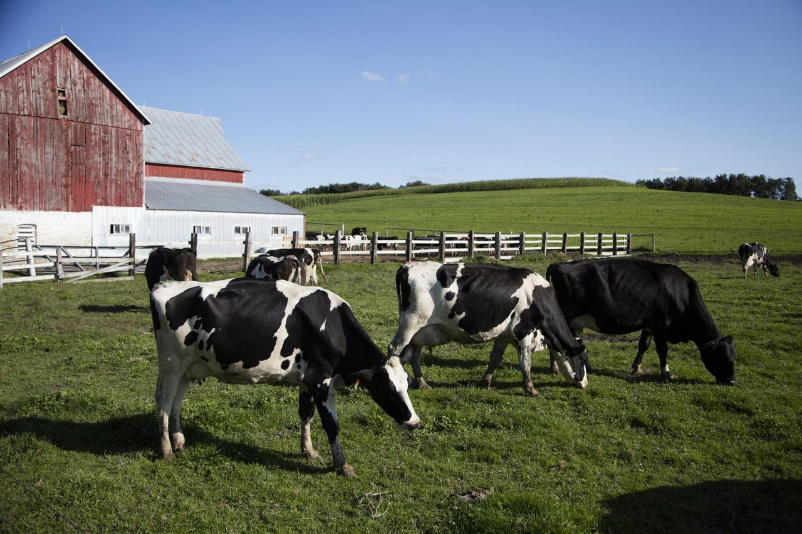
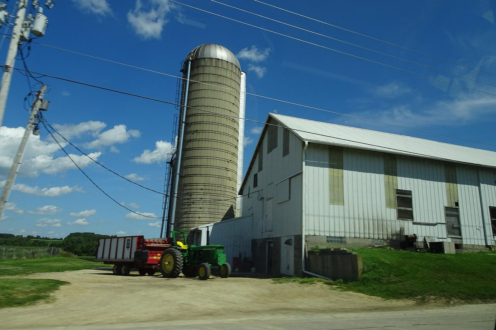

About Dr. Glenn Pearson, DVM
A 1985 graduate of the University of Illinois College of Veterinary Medicine, Dr. Pearson served for 15 years in traditional dairy practice in Cumberland, Wisconsin, prior to opening Dairy Pharm Services in 1999.
Married in 1988, Glenn and his wife Elaine have since been blessed with three sons. When he's not at Advanced Dairy Diagnostics & Consulting, Glenn is usually involved in his family's church, school and sports activities.

Our story
More than 20 years with BioPRYN
As the first BioPRYN® affiliate lab east of the Rockies, Advanced Dairy Diagnostics & Consulting began operations in 1999 under the original name of Dairy Pharm Services. Since the affiliation in 2005, ADDC has supported its clients with more than 20 years of proven experience using BioPRYN.
As a client of ADDC, you automatically receive the expert guidance of Dr. Pearson. With more than 40 years of dairy and beef production medicine experience, Dr. Pearson is only an email or phone call away from helping you with timely intervention and up-to-date corrective advice.
ADDC's clients in all 48 contiguous states benefit from this combination of reproductive knowledge and technology, including BioPRYN. Beyond it, ADDC also offers BVD, Johnes, Leukosis, Mycoplasma and other disease monitoring programs.

Consulting
Herd health consulting
Every testing client gets Dr. Pearson's troubleshooting and support with their results. Herds that want more than that hire him as their consultant. As your personal consultant, he provides:
- Herd health and treatment records review and analysis
- Customized preventive programs and treatment plans for your herd
- Dairy Comp 305 records consulting
- Biosecurity program design
- Disease monitoring programs: BVD, Johnes, Leukosis and Mycoplasma
- Personalized training in on-farm procedures like tail bleeding and ear notching
It starts with a phone call. Tell him about the herd, send the records you already keep, and agree on what you need: a one-time review or a standing program. Call (715) 653-2201 or send a note.

Before you call
What to have ready
Tick what you keep. The list that prints is what to gather before a records review.
Tick what you have in hand and what is still missing is listed here.
Learn how you can adopt exciting new technologies to increase your herd's profitability through improved reproductive management. Call us at (715) 653-2201 or contact us for more information.